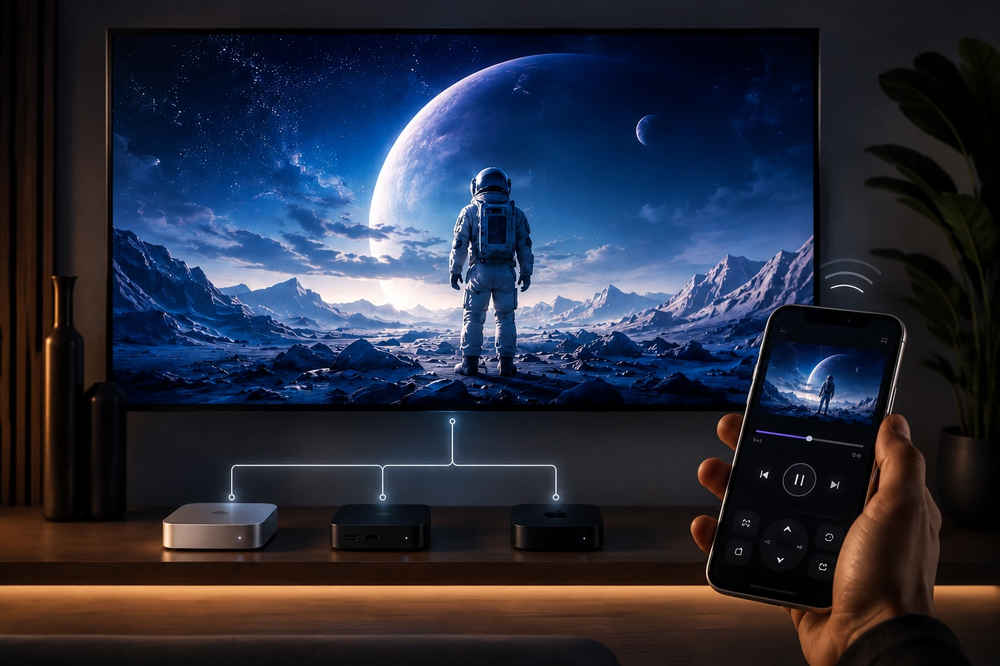
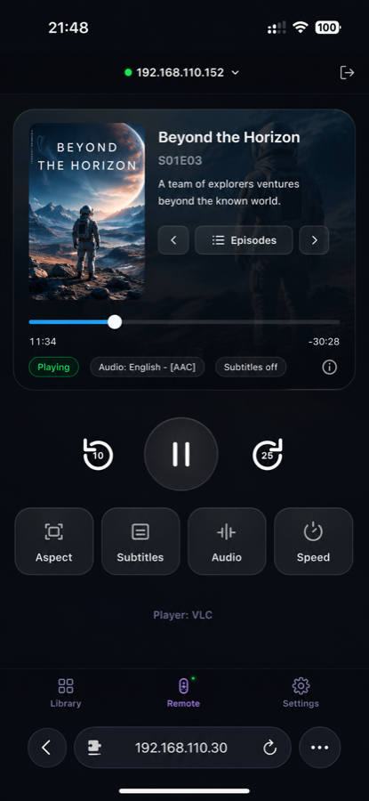
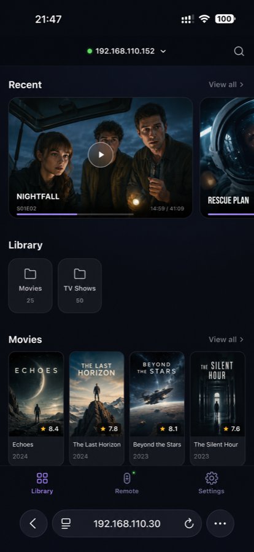

性能已经在那里了
很多人家里那台 NUC 或迷你主机——哪怕只是台 N100——本来就在做下载机、跑 Docker、管理 NAS。它功耗不高、长期在线，还有一个经常闲着的 HDMI 接口。没必要再买一台只能做一件事的设备。
手机控制，电脑播放
接上电视的电脑负责真正的播放，你窝在沙发上用手机选片、拖进度条、调倍速——不用再摸键盘鼠标，也不用满沙发缝找遥控器。那台电脑正好可以是家里已经在跑 Docker 的 NUC、迷你主机，或一台 Mac mini。

WHY TINYPLAY
很多人家里那台 NUC 或迷你主机——哪怕只是台 N100——本来就在做下载机、跑 Docker、管理 NAS。它功耗不高、长期在线，还有一个经常闲着的 HDMI 接口。没必要再买一台只能做一件事的设备。
电脑接上电视很简单，真正麻烦的是窝在沙发里选片、拖进度、切字幕：键盘鼠标不属于客厅，远程桌面又太重。
选片、拖进度条、切换倍速——这些你会反复动手的操作，全部挪到手机上完成。桌面端连接 Emby、Jellyfin、Plex 或 SMB/WebDAV 共享并驱动内置的万能播放器，手机扫码即可浏览媒体库。播放留在电脑，控制回到你手里。
ONE SMALL APP
内置的万能播放器负责真正的播放，TinyPlay 负责把媒体库、遥控器和桌面播放器连在一起。没有云端中转，操作都发生在你的家庭局域网里。


HOW IT WORKS
在 Windows 小主机或 Apple Silicon Mac 上运行 TinyPlay。
添加媒体服务器或网络共享，让电脑通过 HDMI 连接电视。
手机扫描二维码，选片、播放，坐回沙发。
LIVING-ROOM GUIDE
没有绝对的赢家，只有不同的取舍。TinyPlay 最适合那台你已经拥有、也愿意继续榨干性能的电脑。
| 维度 | NUC / Windows 小主机 | M 芯片 Mac mini | Apple TV 4K | 专业蓝光机 |
|---|---|---|---|---|
| 核心定位 | 可折腾的全能 HTPC | 电脑 + 播放器 | 流媒体盒子 | 光盘与影音专机 |
| 下载 / Docker | 最自由 | 很强 | 不适合 | 不支持 |
| 本地媒体 / NAS | 格式和软件选择最多 | 很强 | 需第三方播放器 | 不是主要场景 |
| 流媒体 | 浏览器与桌面 App | 浏览器与桌面 App | 最省心 | 能力有限 |
| 高清音频直通 | 上限最高 | 不以源码直通见长 | 不以本地高清直通见长 | 最稳妥 |
| HDR / 杜比视界 | 看显卡与播放器，上限高但要自己调 | 支持 HDR10，杜比视界受限 | 开箱即用、最省心 | 原生杜比视界，最稳 |
| 维护成本 | 高 | 中 | 低 | 低 |
| 最适合 | 已有小主机，愿意折腾并榨干性能 | 希望电视柜里也是一台完整电脑 | 流媒体优先、全家省心 | UHD 蓝光收藏与功放玩家 |
下载、Docker、NAS 管理和播放一机多用；自由度最高，也需要更多调校。
播放、浏览、工作和家庭服务兼顾，适合想保留完整电脑体验的人。
流媒体与家庭使用体验最好，本地播放交给成熟的第三方 App。
面向实体光盘、AV 功放和稳定的影音体验，但用途最单一。
实际 HDR、Dolby Vision 与音频能力会随芯片、操作系统、驱动、播放器、片源封装和影音设备而变化，购买前请以具体设备规格为准。
READY WHEN YOU ARE
Windows x86-64 · macOS Apple Silicon